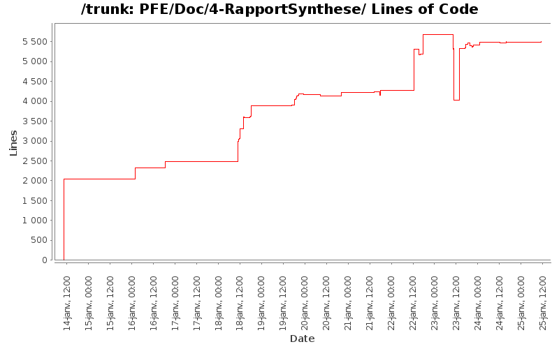

[root]/PFE/Doc/4-RapportSynthese

| Author | Changes | Lines of Code | Lines per Change |
|---|---|---|---|
| Totals | 126 (100.0%) | 32289 (100.0%) | 256.2 |
| fab0670312047 | 44 (34.9%) | 11247 (34.8%) | 255.6 |
| nakara.rahma | 28 (22.2%) | 10797 (33.4%) | 385.6 |
| hoc5783 | 39 (31.0%) | 5078 (15.7%) | 130.2 |
| mesbahi.jaafar | 5 (4.0%) | 1842 (5.7%) | 368.4 |
| mesbahi.jaafar@gmail.com | 1 (0.8%) | 1387 (4.3%) | 1387.0 |
| josianegarcia66 | 7 (5.6%) | 1111 (3.4%) | 158.7 |
| Abdelali.nait | 2 (1.6%) | 827 (2.6%) | 413.5 |
+ MON DERNIER COMMIT POUR LES RAPPORTS !
(Fabien, garde ces documents si tu y tiennes tellement, perso je n'en veux pas :p)
Philippe
576 lines of code changed in 2 files:
+ Correction mineure
1340 lines of code changed in 1 file:
-+ Relecture + correction
1200 lines of code changed in 1 file:
+ correction
4016 lines of code changed in 7 files:
+ Correction sur les outils subversion
5 lines of code changed in 1 file:
+ Mise en forme du rapport avec corrections.
10 lines of code changed in 1 file:
+ Relecture du rapport de synthèse
1374 lines of code changed in 7 files:
+ Voilà le rapport gestion des coûts.
+ Veuillez faire une relecture pour les fautes de français.
Philippe
3 lines of code changed in 1 file:
+ j'ai mis une deuxieme version de la conclusion si quelquen veu mixer les 2 si non il fau juste la supprimer
174 lines of code changed in 1 file:
+ Ajout petite note
+ Ajout d'une partie que je suugère à chacun de lire dans la gestion de
projet
1414 lines of code changed in 1 file:
+ Ajout du CDC comme demandé.
34 lines of code changed in 1 file:
+- Modification du fichier AlgoMarcheur.lyx (rapport de synthése)
Abdou Nait Abdelkacem
1387 lines of code changed in 1 file:
+ conclusion sur D3 incorporé dans le tableau
1206 lines of code changed in 1 file:
+ Ajout d'éléments manquants
27 lines of code changed in 1 file:
+ Mise en forme rapport de synthèse
+ Rajout de citations pour Etat de l'art
56 lines of code changed in 3 files:
+ S'il te plait arrête de travailler sur la même partie que moi car ça créer de$
$le mois prochain surement). Donc il n'y a pas d'incohérence entre les 2 taux si tu as bien lu le rapport (2010 c'est officiel et 2011 c'est une prévision statistique).
2 lines of code changed in 1 file:
+ Correction du bug qui empèche la compilation
5 lines of code changed in 1 file:
+ Correction Ortographe et Syntaxe
123 lines of code changed in 3 files:
+ Relecture globale et mise en cohérence des parties
988 lines of code changed in 4 files:
IMPORTANT : Fabien, tu es incorrigible ! Ce n'est pas que je ne fais pas de commit tous les heures, ça ne veut pas dire que je ne bosse pas ! De plus tes petits copier-coller, je sais le faire aussi ! Voire peut-être mieux puisque c'est moi qui l'a rédigé.
+ Modif de quelques valeurs sur gestion des coûts / synthèse.
+ Rédaction en cours du rapport de gestion des coûts ainsi que le calcul des indicateurs (je pense avoir une piste). Donc Fabien, si tu t'ennuis fais autres choses, ne vient pas mettre le désordre dans ma partie. Une fois, finis, tu seras libre de corrigier.
Merci de votre compréhension,
Philippe
15 lines of code changed in 1 file:
+ Remise du bilan de l'état de l'art dans le rapport de synthèse avec
La conclusion à part
1307 lines of code changed in 1 file:
+ je re commit tous car sur ma boite ya qu'un seul commit jen ai fait 4 ou son passé les autres?
0 lines of code changed in 1 file:
+ introduction de la parti contexte , il faut faire la meme chose pour toute les parti afin de guider le lecteur
489 lines of code changed in 1 file:
+ quelque modification
176 lines of code changed in 1 file:
+ quelque modification mais il manque toujour l'ennoncé du cahier de charge tel qu'il est jai mis une note dessus
23 lines of code changed in 1 file:
+ je ne suit pas arrivé a revenir à la ligne pour faire une parti sur la D3 et une parti conclusion, il faut juste arranger ça
1205 lines of code changed in 1 file:
- Supression et déplacement des doublons
+ Ajout conclusion rapport de Synthèse
+ Correction orthographique
537 lines of code changed in 3 files:
+ Relecture rapide
20 lines of code changed in 2 files:
+Suppression des références qui n'existent plus.
+Gestion des coûts
238 lines of code changed in 2 files:
+ Rajout du tableau de conclusion
1573 lines of code changed in 1 file:
+ je commit meme si ce n'est pas fini pour ne pas avoir de conflit plus tard
546 lines of code changed in 1 file:
+ Ajout d'explication pour l'algo
899 lines of code changed in 1 file:
-+ Modification présentation STMicroeletronics
186 lines of code changed in 1 file:
+ Gestion des coûts pour le rapport de synthèse sera fini ce soir au plus tard.
+ EntrepiseST pour Jaafar.
+ Bilan Etat de l'Art : corrections et remettre la nature du document.
+ Suppression des fichiers non utilisés dans les dossiers des rapports.
126 lines of code changed in 4 files:
+ Ajout de références bibilographiques
668 lines of code changed in 4 files:
+ Ajout référence et structuration
26 lines of code changed in 1 file:
+ Correction et mise des rapports envoyés
3 lines of code changed in 1 file:
+ Quelques petites corrections
34 lines of code changed in 2 files:
+ correction
780 lines of code changed in 1 file:
+ correction
38 lines of code changed in 1 file:
(25 more)